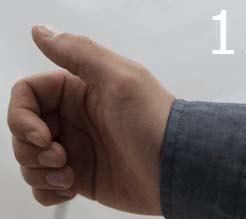
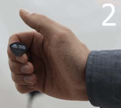
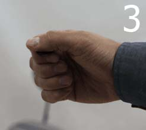
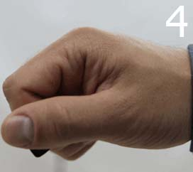

Новые разборы
Новые уроки
Как держат медиатор рок-звезды?
Гитарный медиатор - это один из элементов, который имеет наибольшее значение для вашей техники игры и звучания вашего инструмента. Вам стоит уделить особое внимание тому как правильно держать медиатор.
Вы можете встретиться с очень многими способами как держать медиатор, при этом нельзя с абсолютной уверенностью заявить, что каждый конкретный способ держать медиатор является самым правильным.Тем не менее, подавляющее большинство профессиональных гитаристов применяют следующий способ хвата медиатора:




Как выбрать акустическую гитару для начинающих
О чудо, вы решили научиться играть на гитаре. Вас распирает от эмоций и желания поскорее начать играть, но первый же вопрос ставит Вас в тупик. Если это так, то вы зашли по адресу. Обычный человек, как правило не знает по каким критериям стоит выбирать гитару, я в свое время тоже этого не знал, я перелопатил пол интернета, но нигде не нашел точных критериев выбора. У вас есть уникальная возможность увидеть подробную инструкцию по выбору акустической гитары, прямо сейчас, бесплатно, сидя в интернете, круто не правда ли. Итак, начнем.
читать далее